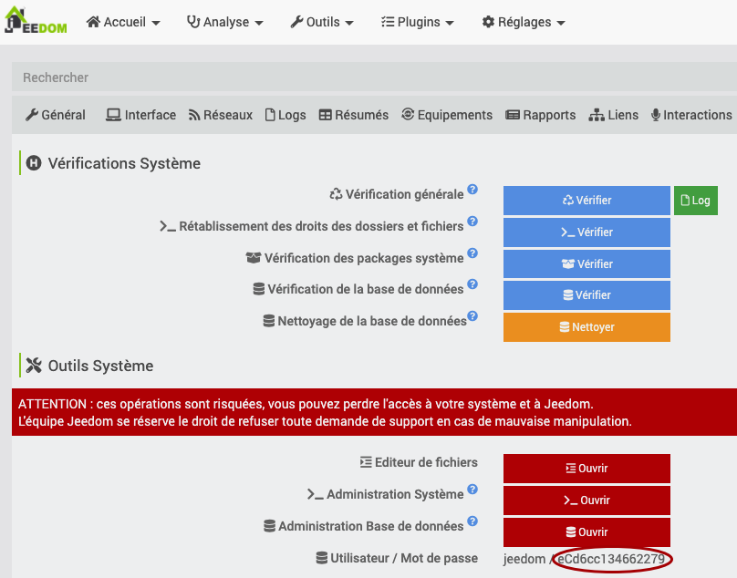
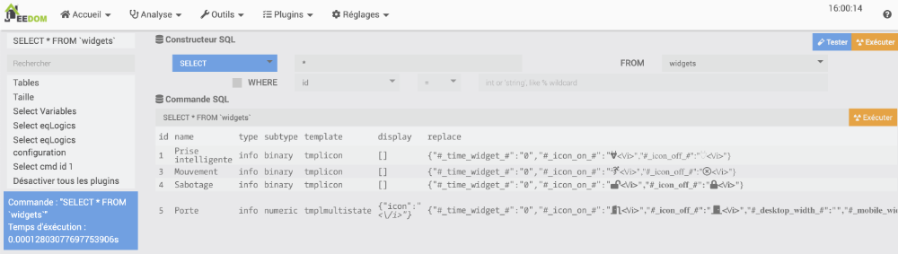
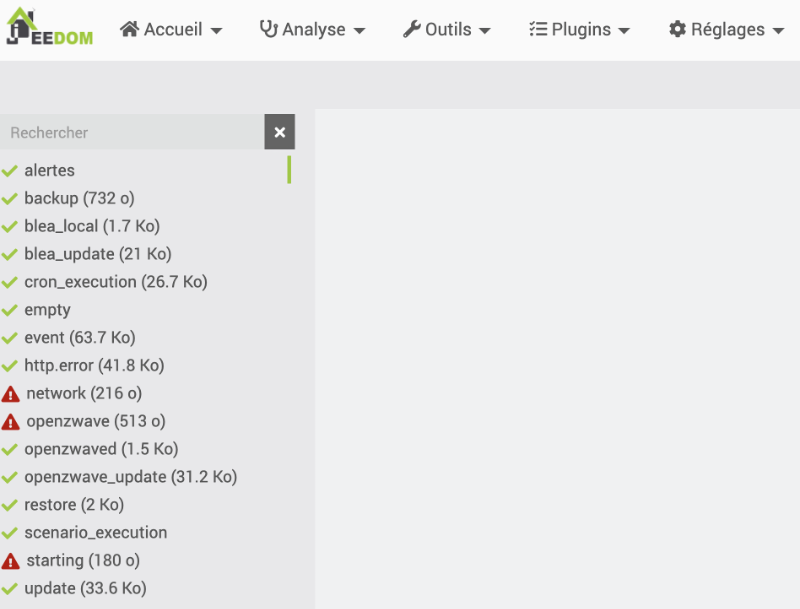
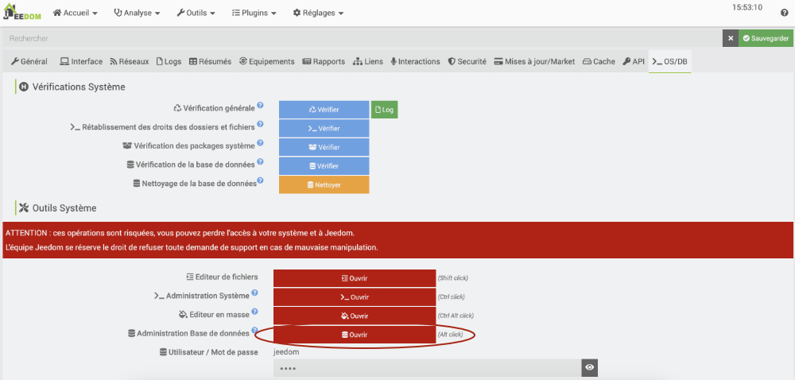

36. La base de données Jeedom¶
36.1 En résumé...¶
Voici un résumé des informations essentielles du ou des prochains chapitres.
Notez que certaines fiches, qui font partie intégrante du cours, pourraient ne pas figurer dans ce résumé.
Je vous recommande d'effectuer une lecture de l'ensemble des fiches de ces chapitres afin de bien saisir les enjeux.
Retrouver le mot de passe de la base de donnees jeedom¶
Rendez-vous dans le menu Réglages / Système / Configuration / >_ OS/DB.
Tel qu'indiqué au bas de l'écran, le code d'usager MySQL est jeedom. Le mot de passe apparaît à sa droite.

Contenu de la base de donnees de jeedom¶
Jeedom utilise une BD MySQL que vous pouvez manipuler dans dans la console MySQL.
Terminal du Raspberry Pi
Pour connaître les tables qu'elle contient :
MySQL
Résultat à l'écran
MariaDB [jeedom]> SHOW TABLES;
+--------------------+
| Tables\_in\_jeedom |
+--------------------+
| cache |
| cmd |
| config |
| cron |
| dataStore |
| eqLogic |
| event |
| history |
| historyArch |
| interactDef |
| interactQuery |
| listener |
| message |
| note |
| object |
| plan |
| plan3d |
| plan3dHeader |
| planHeader |
| scenario |
| scenarioElement |
| scenarioExpression |
| scenarioSubElement |
| timeline |
| update |
| user |
| view |
| viewData |
| viewZone |
| widgets |
+--------------------+
30 rows in set (0.002 sec)
MariaDB [jeedom]>
Il est également possible de consulter la base de données directement dans Jeedom :
- Réglages / Système / Configuration
- Dans l'onglet _OS/DB, vis-à-vis Administration Base de données, cliquez sur Ouvrir.

Consulter les fichiers journaux¶
Rendez-vous dans le menu Analyse / Logs.

- Données sur les capteurs dans le journal event.
- Données sur l'exécution des scénarios disponibles à partir de l'icône Log dans l'écran d'édition d'un scénario.
 * Autres fichiers journaux disponibles, par exemple Analyse / Temps réel.
* Autres fichiers journaux disponibles, par exemple Analyse / Temps réel.
Vous verrez une vue chronologique des événements qui se sont produits.

Scenario qui ajoute une entree dans le fichier journal¶
Très pratique pour faire un suivi de ce qui se passe ou pour déboguer un scénario.
Trois techniques différentes sont illustrées dans cet exemple.

Scenario qui inscrit dans un fichier journal une valeur retrouvee automa ¶
Inscrire la valeur d'un capteur :
Bloc de code dans scénario (PHP)
$cmd = cmd::byString('#[Maison][Détecteur Lumière][Luminance]#');
$value = $cmd->execCmd();
log::add('alertes', 'ALERT', "Luminance: $value");
Inscrire la valeur du déclencheur :
Bloc de code dans scénario (PHP)
$trigger = cmd::cmdToHumanReadable($scenario->getRealTrigger());
$cmd = cmd::byString($trigger);
$value = $cmd->execCmd();
log::add('alertes', 'ALERT', "Valeur du déclencheur : $value");
36.2 Retrouver le mot de passe de la base de données Jeedom¶
Il y a toujours une façon de réinitialiser le mot de passe pour accéder à une base de données MySQL, en autant qu'on ait un accès à une fenêtre Terminal sur le serveur MySQL, en l'occurence le Raspberry Pi.
Mais avant de se lancer dans de telles manipulations, il est préférable d'essayer de travailler avec le mot de passe actuel, qui est facile à trouver.
Le mot de passe de la base de données peut être retrouvé à partir de l'interface d'administration de Jeedom.
- Ouvrez l'interface d'administration de Jeedom,acceder.
- Rendez-vous dans le menu Réglages / Système / Configuration / >_ OS/DB.
- Tel qu'indiqué au bas de l'écran, le code d'usager MySQL est jeedom. Le mot de passe apparaît à sa droite.
Vous avez maintenant tout ce qu'il faut pour accéder à la base de données.
36.3 Réinitialiser le mot de passe MySQL de Jeedom¶
Je vous propose deux manipulations à effecture sur le serveur de base de données MySQL installé sur votre boîte Jeedom :
- Modification du mot de passe alors que le mot de passe actuel est connu
- Réinitialisation du mot de passe lorsque le mot de passe actuel n'est pas connu
Modification du mot de passe¶
Si vous souhaitez modifier le mot de passe de l'usager jeedom sous MySQL alors que vous connaissez son mot de passe actuel, suivez ces étapes.
- Connectez-vous au Raspberry Pi soit via SSH ou encore en y branchant un clavier et un écran.
- Lancez la ligne de commande MySQL puis entrez le mot de passe actuel lorsque demandé.
Terminal
* L'usager jeedom ne détient pas les droits requis pour utiliser les commandes ALTER USER ni pour éditer directement la table USERS.Cependant, il peut modifier son propre mot de passe à l'aide de la commande SET PASSWORD.
Évidemment, vous devez changer mot-de-passe-en-clair pour le mot de passe désiré.
MySQL
* Sortez de la ligne de commande MySQL.MySQL
* Vous devez maintenant dire à Jeedom quel est le nouveau mot de passe.Réinitialisation du mot de passe¶
Avant de tenter une réinitialisation du mot de passe pour accéder à la base de données MySQL de Jeedom, sachez qu'il est possible de retrouver ce mot de passe directement dans la console d'administration de Jeedom.
Si vous devez tout de même réinitialiser le mot de passe, voici comment y parvenir.
- Connectez-vous au Raspberry Pi soit via SSH ou encore en y branchant un clavier et un écran.
- Prenez une copie de sécurité du fichier de configuration de MySQL.
Terminal
* Éditez le fichier de configuration de MySQL.Terminal
* Repérez la section [mysqld] et ajoutez-y l'instruction suivante. Si la section est inexistante, créez-la simplement.Fichier my.cnf
Attention : ceci est dangereux et il faudra retirer la configuration skip-grant-tables dès que possible. * Redémarrez MySQL.
Terminal
* Vous pouvez maintenant accéder à MySQL avec l'usager root sans mot de passe.Terminal
* Entrez cette commande pour réinitialiser le mot de passe de l'usager jeedom pour ce qui vous plaît. Évidemment, vous devez changer mot-de-passe-en-clair pour le mot de passe désiré.Notez qu'il n'est pas possible d'utiliser la commande ALTER USER jeedom@localhost IDENTIFIED BY 'mot-de-passe-en-clair'; lorsque la configuration skip-grant-tables est activée.
MySQL
* Sortez de la ligne de commande MySQL.MySQL
* Vous pouvez désormais accéder à MySQL avec l'usager jeedom en utilisant ce mot de passe. Entrez cette commande puis entrez le mot de passe lorsque MySQL vous le demandera.Terminal
* Une fois que vous avez constaté que le mot de passe est fonctionnel, ressortez de la ligne de commande MySQL.MySQL
* Important : afin de ne pas ouvrir un trou de sécurité, éditez à nouveau le fichier de configuration de MySQL afin de retirer la ligne qui permet de se connecter avec root sans mot de passe.Terminal
* Puis redémarrrez une autre fois le service MySQL.Terminal
* Vous devez maintenant dire à Jeedom quel est le nouveau mot de passe.Dire à Jeedom quel est le nouveau mot de passe¶
À ce stade, si vous tentez d'accéder à l'interface d'administration de Jeedom,acceder, vous obtiendrez le message « SQLSTATE[HY000] [1045] Access denied for user 'jeedom'@'localhost' (using password: YES) ». Il faut donc effectuer une manipulation supplémentaire pour que Jeedom utilise le nouveau mot de passe.
- Prenez une copie de sécurité du fichier que vous devrez modifier.
Terminal
sudo cp /var/www/html/core/config/common.config.php /var/www/html/core/config/common.config-original.php
Terminal
* Entrez le nouveau mot de passe à la ligne password.Fichier /var/www/html/core/config/common.config.php
<?php
/\* This file is part of Jeedom.
\*
\* Jeedom is free software: you can redistribute it and/or modify
\* it under the terms of the GNU General Public License as published by
\* the Free Software Foundation, either version 3 of the License, or
\* (at your option) any later version.
\*
\* Jeedom is distributed in the hope that it will be useful,
\* but WITHOUT ANY WARRANTY; without even the implied warranty of
\* MERCHANTABILITY or FITNESS FOR A PARTICULAR PURPOSE. See the
\* GNU General Public License for more details.
\*
\* You should have received a copy of the GNU General Public License
\* along with Jeedom. If not, see <http://www.gnu.org/licenses/>.
\*/
/\* \* \*\*\*\*\*\*\*\*\*\*\*\*\*\*\*\*\*\*\*\*\* Debug \*\*\*\*\*\*\*\*\*\*\*\*\*\*\*\* \*/
define('DEBUG', 0);
/\* \* \*\*\*\*\*\*\*\*\*\*\*\*\*\*\*\*\*\*\*\*\*\*\* MySQL & Memcached \*\*\*\*\*\*\*\*\*\*\*\*\*\*\*\*\*\*\* \*/
global $CONFIG;
$CONFIG = array(
//MySQL parametres
'db' => array(
'host' => 'localhost',
'port' => '3306',
'dbname' => 'jeedom',
'username' => 'jeedom',
'password' => 'mot-de-passe-en-clair',
),
);
Et voilà! Le mot de passe MySQL de l'usager jeedom est maintenant modifié et l'interface d'administration de Jeedom peut maintenant l'utiliser pour s'y connecter.
36.4 Contenu de la base de données de Jeedom¶
Lorsque j'apprends à utiliser un nouveau système, j'aime bien comprendre ce qui se cache derrière les écrans qu'il me propose. Et ceci passe assurément par sa base de données.
Je vous propose ici quelques manipulations pour explorer la base de données de Jeedom.
Attention : si vous effectuez des manipulations autres que des SELECT, vous risquez d'endommager votre système. C'est une bonne idée d'effectuer une copie de sécurité de Jeedom avant de vous lancer.
- Accédez à la ligne de commande du Pi soit via SSH, soit en y branchant un écran et un clavier.
- Vous devez avoir en main le mot de passe de l'usager jeedom sur le serveur MySQL. Si vous ne le connaissez pas, suivez les instructions ici : retrouver_le_mot_de_passe_de_la_base_de_donnees_jeedom.
- Dans une fenêtre Terminal sur le Pi, lancez la commande suivante puis entrez le mot de passe lorsque MySQL vous le demandera.
Terminal
* Vous êtes désormais à la ligne de commande MySQL. L'invite (MariaDB [(none)]>) indique qu'aucune base de données n'est sélectionnée.Résultat à l'écran
pi@raspberrypi:~ $ mysql -u jeedom -p
Enter password:
Welcome to the MariaDB monitor. Commands end with ; or \g.
Your MariaDB connection id is 182
Server version: 10.3.29-MariaDB-0+deb10u1 Raspbian 10
Copyright (c) 2000, 2018, Oracle, MariaDB Corporation Ab and others.
Type 'help;' or '\h' for help. Type '\c' to clear the current input statement.
MariaDB [(none)]>
MySQL
Résultat à l'écran
MariaDB [(none)]> SHOW DATABASES;
+--------------------+
| Database |
+--------------------+
| information\_schema |
| jeedom |
+--------------------+
2 rows in set (0.002 sec)
MariaDB [(none)]>
MySQL
* Pour connaître les tables qu'elle contient :MySQL
Résultat à l'écran
MariaDB [jeedom]> SHOW TABLES;
+--------------------+
| Tables\_in\_jeedom |
+--------------------+
| cache |
| cmd |
| config |
| cron |
| dataStore |
| eqLogic |
| event |
| history |
| historyArch |
| interactDef |
| interactQuery |
| listener |
| message |
| note |
| object |
| plan |
| plan3d |
| plan3dHeader |
| planHeader |
| scenario |
| scenarioElement |
| scenarioExpression |
| scenarioSubElement |
| timeline |
| update |
| user |
| view |
| viewData |
| viewZone |
| widgets |
+--------------------+
30 rows in set (0.002 sec)
MariaDB [jeedom]>
- À partir d'ici, vous pouvez explorer le contenu de chacune des tables, par exemple la table cron, comme ceci :
MySQL
Résultat à l'écran
MariaDB [jeedom]> SELECT \* FROM cron;
+----+--------+----------+-------------+--------------------+---------+--------+-----------------+------------------+------+
| id | enable | class | function | schedule | timeout | deamon | deamonSleepTime | option | once |
+----+--------+----------+-------------+--------------------+---------+--------+-----------------+------------------+------+
| 1 | 1 | plugin | cronDaily | 00 00 \* \* \* | 240 | 0 | 1 | NULL | 0 |
| 2 | 1 | jeedom | backup | 36 00 \* \* \* | 60 | 0 | 1 | NULL | 0 |
| 3 | 1 | plugin | cronHourly | 00 \* \* \* \* | 60 | 0 | 1 | NULL | 0 |
| 4 | 1 | scenario | check | \* \* \* \* \* | 30 | 0 | 1 | NULL | 0 |
| 5 | 1 | scenario | control | \* \* \* \* \* | 30 | 0 | 1 | NULL | 0 |
| 6 | 1 | jeedom | cronDaily | 7 0 \* \* \* | 240 | 0 | 1 | NULL | 0 |
| 7 | 1 | jeedom | cronHourly | 2 \* \* \* \* | 60 | 0 | 1 | NULL | 0 |
| 8 | 1 | jeedom | cron5 | \*/5 \* \* \* \* | 5 | 0 | 1 | NULL | 0 |
| 9 | 1 | jeedom | cron10 | \*/10 \* \* \* \* | 10 | 0 | 1 | NULL | 0 |
| 10 | 1 | jeedom | cron | \* \* \* \* \* | 2 | 0 | 1 | NULL | 0 |
| 11 | 1 | plugin | cron | \* \* \* \* \* | 2 | 0 | 1 | NULL | 0 |
| 12 | 1 | plugin | cron5 | \*/5 \* \* \* \* | 5 | 0 | 1 | NULL | 0 |
| 13 | 1 | plugin | cron10 | \*/10 \* \* \* \* | 10 | 0 | 1 | NULL | 0 |
| 14 | 1 | plugin | cron15 | \*/15 \* \* \* \* | 15 | 0 | 1 | NULL | 0 |
| 15 | 1 | plugin | cron30 | \*/30 \* \* \* \* | 30 | 0 | 1 | NULL | 0 |
| 16 | 1 | plugin | checkDeamon | \*/5 \* \* \* \* | 5 | 0 | 1 | NULL | 0 |
| 17 | 1 | cache | persist | \*/30 \* \* \* \* | 30 | 0 | 1 | NULL | 0 |
| 18 | 1 | history | archive | 00 5 \* \* \* | 240 | 0 | 1 | NULL | 0 |
| 19 | 1 | plugin | heartbeat | \*/5 \* \* \* \* | 10 | 0 | 1 | NULL | 0 |
| 20 | 1 | weather | pull | 23 19 05 09 \* 2021 | 60 | 0 | 1 | {"weather\_id":3} | 0 |
+----+--------+----------+-------------+--------------------+---------+--------+-----------------+------------------+------+
20 rows in set (0.002 sec)
MariaDB [jeedom]>
Voir les données directement dans Jeedom¶
Jeedom vous permet d'effectuer certaines manipulations de la base de données directement dans son interface Web.
- Dans l'interface Web de Jeedom, rendez-vous dans le menu Réglages / Système / Configuration.
- Dans l'onglet _OS/DB, vis-à-vis Administration Base de données, cliquez sur Ouvrir.

* L'interface permet d'effectuer certaines opérations sur la base de données. Attention : certaines opérations modifieront les données alors vous devez être prudents avant de cliquer sur les différents boutons. C'est une bonne idée d'effectuer une copie de sécurité de Jeedom avant de tenter des manipulations. * L'interface permet d'effectuer facilement un SELECT sur une table données. Voici par exemple le contenu de la table widgets.Voir les données dans votre éditeur MySQL favori¶
Petit truc pour explorer la base de données à l'aide d'un outil graphique :
- Effectuez une copie de sécurité de Jeedom.
- Téléchargez la copie sur votre poste de travail puis décompressez le fichier.
- Créez une base de données vide sur votre poste de travail à l'aide de phpMyAdmin ou d'un autre outil de votre choix (vous devez avoir un serveur MySQL qui roule).
- Remplissez la base de données à l'aide du script SQL qui se trouve dans la copie de sécurité que vous venez de télécharger.
- Vous avez désormais accès aux données de Jeedom dans votre outil SQL préféré!